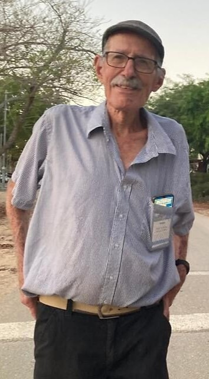

עודד ליפשיץ
עודד ליפשי בן 84 מקיבוץ ניר עוז.
הוא עיתונאי ישראלי ופעיל חברתי.
עודד ליפשיץ גדל בחיפה, וסיים את בית הספר הריאלי העברי בעיר בשנת 1957 (מחזור ל"ח).
היה חניך השומר הצעיר.
שירת בגדוד 50 של הנח"ל המוצנח.
נמנה עם הגרעין המייסד של קיבוץ ניר עוז שבעוטף עזה.
שימש בקיבוץ בתפקידים שונים וביניהם מזכיר, מרכז, גזבר, יו"ר ועדת חינוך, יו"ר כלכלי.
בהמשך הוצע לו לשמש רכז הדור הצעיר במפ"ם אך סירב.
במשך שנים רבות עבד כעיתונאי לצד פעילותו הציבורית והמפלגתית.
עודד שירת בצה"ל כלוחם בגדוד נח"ל המוצנח ולחם במלחמת ששת הימים, מלחמת ההתשה, מלחמת יום כיפור ומלחמת לבנון הראשונה.
נחטף לרצועת עזה ב-7.10 יחד עם אשתו יוכבד.
אשתו שוחררה בעסקת החטופים.